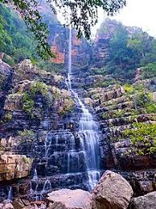

Thalakona Waterfalls
Thalakona Waterfalls is a mesmerizing waterfall located near Tirupati in the Chittoor district of Andhra Pradesh, India. It is situated amidst the lush forests of the Eastern Ghats and is known for its scenic beauty and tranquil surroundings.
Location: Chittoor District, Andhra Pradesh, India
Height: Approximately 280 feet (85 meters)
Accessibility: Accessible by road from Tirupati. Visitors can reach the falls after a short trek through the forest.